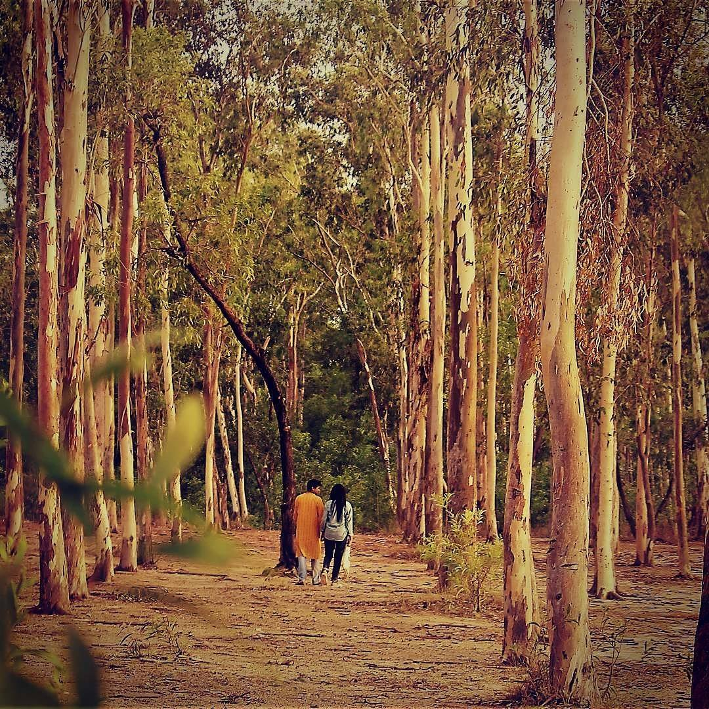

বিচ্ছেদের পর ৩ মাস আমি শোকে কাতর ছিলাম-
এদিকে ওদিকে হাঁটতাম,
খামোখা হাত চলে যেতো প্যান্টের পকেটে-
শার্টের বুকে,
হাতড়ে হাতড়ে ভাবতাম- "কি যেন নেই, কি যেন নেই... ".
মানিব্যাগে কাগজের ভাঁজে জমাট হয়ে থাকতো গাঁজা-
সেসময়ে আমি গাঁজা খেতাম খুব,
প্রতি রাতে বাড়ি ফেরার পথে তেজগাঁও বস্তিতে
২০ টাকার গাঁজা কিনে ফিরতাম ।
গাঁজা খেলে নাকি দুঃখ ভুলে ?
কোথায় ভুলেছি আমি ?
কিছুই তো ভুলিনি !
স্পষ্ট মনে আছে সব এখনও-
আমার সাথে ওর ঘুরে বেড়ানো,
ঘাসের মাঠে শুয়ে একসাথে আকাশ দেখতাম কখনো-
আঙুলকে তুলি ভেবে রঙ ছুঁড়ে দিতাম আকাশে ।
আমাদের দুজনের আঙুল হতো
দক্ষ পাবলো পিকাসো-
আর পুরো আকাশটা হয়ে যেত ক্যানভাস ...
বিচ্ছেদের বছর খানেক পর আমি স্বাভাবিক হই-
ইচ্ছে হলে নেশা করতাম,
ইচ্ছা না হলে ঘুমিয়ে যেতাম ।
ততদিনে আমি বুঝে গিয়েছি জীবন কারো জন্য থেমে থাকে না-
এটা বোঝার পর থেকেই আমার জেদ চাপতো,
আমি ওকে থামিয়ে দিতে চাইতাম-
ইচ্ছে হতো অপহরণ করি,
উপযুক্ত ধর্ষণ করি বিছানায় ফেলে-
সে উলঙ্গ অবস্থায় কাতর হয়ে হাতজোড় করে মুক্তি চাইবে,
যেমন করে আমি হাত জোড় করে ওকে চেয়েছিলাম
বছর খানেক আগে-
যতটা নির্দয় হয়ে সেদিন আমাকে ফিরিয়ে দিয়েছিল,
তার চেয়েও বেশি নির্দয় হবার জেদ চাপতো !
কিন্ত দিন শেষে কিছুই করা হয়নি আর-
আমি মেনে নিই,
ওর জন্য আমিও থেমে নেই !